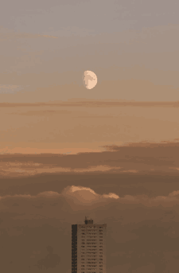

GRAPHIC DESIGNER
2014년 11월부터 2020년 11월까지 총 6년간 미국에서 그래픽디자이너 및 소재기획자로 근무하였습니다. 여러가지 브랜드들과 협업해서 일을 하기도 하였고, 인플루언서인 미쉘김 콜렉션을 함께하기도 했습니다.
HELLO
I AM CHERIN.
Currently based in Seoul, Korea.
This newspaper was published in 2021.

FRONTEND DEVELOPER
프론트엔드 개발자로는 아직 실무경험이 없지만, 하루하루 더 나아가기 위해서 배움의 자세로 성실히 공부하고 있습니다. 제가 진행한 몇가지의 프로젝트를 소개하려고 합니다.
BLANTON
INTERACTIVE,
CREATIVE
DEVELOPER

개발자로서, 저는 사이트 자체에 성격과 캐릭터를 부여하여 만드는 것을 좋아합니다. 사용자가 웹사이트에 들어왔을 때, 웹사이트의 특징을 빠르게 읽을 수 있고, 원하는 정보를 쉽게 가질수 있도록 해야할 것입니다. 그러기 위해서는 개발자로서 저는 특징을 빠르게 읽고, 그것을 시각적으로 또는 기능적으로 나타내줘야 한다고 생각합니다.

WHO IS ABLE TO
COMMUNICATE WELL AND
DELIVER BETTER RESULTS.
저의 장점을 말하자면, 단점을 정확하게 알고 대화가 가능한 사람 이라는 점입니다. 사회생활을 하다보면, 대화가 통하지 않는 사람, 타협이 되지 않는 사람을 만나곤 합니다. 프로젝트할 때 다양한 사람들이 의견을 제안하게 되는데, 경력의 차등없이, 더 좋은 제안서가 있다면 그것을 수용하고, 더 나은 결과를 보여주는 것이 저의 강점입니다.
ABOUT ME
WHY I CALL
MYSELF WANDERER?
첫번째로, 저는 여행하기와 길을 가다가 만나는 하나하나의 개인 상점들을 너무나 좋아합니다. 그곳에서 우연치 않게 많나는 소중한 소품들, 사람들, 특유의 향기 모두 기억하려고 합니다. 이러한 이유들때문에 1년간만 있으려고 했던 미국업무를 6년이나 연장할 수 밖에 없었습니다. 6년간의 미국생활동안 한국문화와 미국문화 사이에 있는 저를 발견하게 되었고, 저의 정체성에 대해서도 의문이 들기 시작했습니다. 그 답을 다시 찾기위해서 한국에 왔고, 그래서 지금이 바로 저에게는 가장 의미있는 시간입니다.


ALWAYS THINK
POSITIVELY.
STRONG WITH
TEAMWROK AND
DEADLINES.
제가 일을 할 때 가장 중요하게 생각하는 것은 협동심입니다. 회사라는 소속에서는 개인 혼자 잘하는 것보다 함께 잘해나가는 것이 뒤돌아 보았을 때 더 빛 나보였고, 큰 성취감을 항상 가져다 주었습니다. 이것은 팀안에 분위기를 변화 시킬수 있고, 각자의 자신감을 상승시켜주었습니다. 그러다 보니, 제가 속한 팀은 이미 외부회사에서도 알려져있게 되었습니다. 각자의 이름보다 팀을 기억해주었고 그덕분에 회사 이름도 알려지게 되었습니다. 저는 디자이너로서의 제 경력을 이용하여, 다시 새롭게 신입 개발자로 성장하기 위한 준비를 해왔습니다. 이미 안정적인 직업을 하고 있는데 왜 새로운 분야로 뛰어들고 싶냐고들 다들 궁금해하고 질문을 합니다. 제가 미국에서 생활하면서 많이 느낀것은 미국사람들은 꾸준하게 무엇인가를 잘한다는 것입니다. 작심삼일로 끝내기 일수 였던 저의 성격을 고치게 되는 계기가 되었고, 남들눈에는 하루하루의 노력하는것이 안보일수 있지만 그것이 쌓였을 때 결국 성장해있는 것을 배우게 되었습니다. 그래서 저는 디자이너로서의 안정감보다는 제가 계속 배우고 도전해야만 하는 개발자라는 직업에 관심을 가지게 되었습니다. 아래는 제가 개발자가 되기위해서 공부하며, 만들었던 사이트, 스크립트 그리고 애니메이션들 입니다. 천천히 둘러봐 주세요.

project
2021
2020년 부터 저는 개발자가 되기위해서 스스로 HTML과 CSS 공부를 책으로 공부하게 되었습니다. 그 후, 다시 2021년에 한국에서 유명한 온라인 강의 수업도 듣게 되었습니다. 그곳을 통해 자바스크립트를 경험하고, 간략적으로 리액트와 타입스크립트를 배웠습니다. 하지만, 온라인 강의를 통해 수업을 듣다보니 궁금한 질문들과 때로는 오류가 났을 때 그 상황을 어떻게 대처해야 하는지 난감했고, 직접 오프라인 강의를 듣는게 낫다고 생각하는 도중 7월부터 국비수업을 참가하게 되었습니다. 오프라인 수업을 참가하다보니 가장 좋았던 것은 제가 생각한 스크립트와 다른사람의 스크립트를 비교하고 배울수 있다는 점입니다. 또한 다양한 정보들을 많이 공유 할 수 있었습니다. 수업에 도움이 되는 사이트부터, 혼자 문제 풀어 볼수 있는 자바스크립트 사이트, 또한 팀프로젝트를 할 때는 실제 회사에서 업무하면 이렇게 해야겠다는 직접 경험을 해볼 수 있었던 소중한 시간이였습니다. 공부하는 하루하루는 제게 너무나 행복한 시간이였고, 되돌리수 없는 아주 값지고 뜻깊은 경험이였으며, 기회였다고 생각합니다.
지금부터 제가 6개월이라는 시간동안 배우고 공부한 저의 소중하고 행복한 시간을 보여드리고자 합니다. 먼저, 첫번째로 소개할 프로젝트는 바로 팀 프로젝트입니다. card sorting , diagram map , UI 구현, 동영상 촬영 및 저와 팀원들이 고생하며 만든 프로젝트로, 카메라 필터에 관한 사이트입니다. 그 다음으로는. 리액트 사이트, 모바일부터 데스크탑까지 반응형으로 구현한 메가박스 사이트, 회원가입과 댓글쓰기등 실제로 작동하게 만든 PHP 사이트, 애플사이트를 참고하여 만든 사이트가 순서대로 보여집니다. 또한 사이트 목차를 지나 스크립트 목차가 나옵니다. 스크립트로는 마우스 효과, 페럴럭스 효과, 슬라이드 효과, 게임효과, 메뉴 효과와 같이 5개의 소분야로 나누어 표현했고, 각각의 효과에는 자바스크립트와 제이쿼리를 사용하여 같은 효과에 다르게 작성하였습니다. 틈틈히 작업했던 애니메이션은 스크립트나 사이트를 만들다가 잠시 쉬고 싶을때 만들어보았습니다. CSS를 사용하여, 텍스트 효과를 준다거나, 노를 젓고 움직이는 애니메이션, 3D 효과처럼 보이는 물결등을 만들어보았으니 아래에서 자세히 확인해주세요.

what is bild and who did make it for?
Bild is a site created to make it easier for people to edit their photos. This is my first team project, The process was not easy much. In order to create the process of actually registering as a member, signing up, and logging in, We had to link, and we had to implement email linkage for the actual contact page to work. To implement the editing function of the filter, after importing the photo, applying the filter is done using JavaScript and Jquery. In this process, our team was able to experience the parts that have changed from the UI and parts that need to be supplemented.
Bild는 사람들이 사진을 더욱 쉽게 편집하기 위해 만들어진 사이트입니다. 저의 첫번째 팀프로젝트 이며, 그 과정은 쉽지 많은 않았습니다. 실제로 회원가입과 가입후, 로그인을 하는 과정을 만들기 위해서 우리는 php연동을 해야했고, 실제 문의하기의 페이지가 작동되기 위해서 이메일 연동을 구현해야했습니다. 또한 카메라 필터의 편집 기능을 구현하기 위해서 사진을 불러온 후, 필터 적용하는 것을 자바스크립트와 제이쿼리를 사용했습니다. 이 과정속에서 저희 팀은 UI 와 달라진 부분과 보완해야할 부분등을 경험 할 수 있었습니다. 완벽하지는 않지만, 저의 첫번째 팀 프로젝트를 위에 이미 지를 클릭하여 확인해주세요.

React site
리액트 사이트를 만들기전에 먼저 피그마라는 프로그램을 사용하여, 디자인 작업을 해주었습니다. 마진과 패딩 여백의 규칙을 정하고 폰트와 컬러 색상을 정했습니다. 제 포트폴리오의 주제인 wanderer를 그대로 테마로 잡고 그테마 패라글라이딩 하는 이미지를 넣어 메인을 완성했습니다. 처음해보는 리액트 사이트여서 하면서 어렵고 이해안가는 부분이 생겼고, 그 부분은 그냥 넘어가지 않고, 꼼꼼히 메모하며 저만의 기록장에 날짜와 함께 표시해두고, 친구들과 상의하며 풀어나갔습니다. 조금 서툴지지만 저의 리액트 사이트를 클릭하여 확인해주세요.
#React #Component #Virtual DOM #JSX #SPA